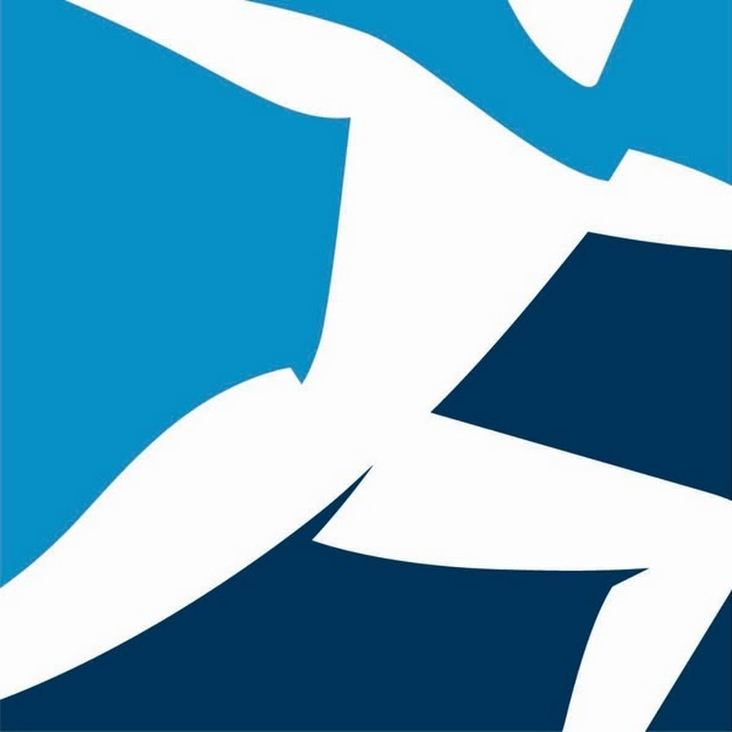
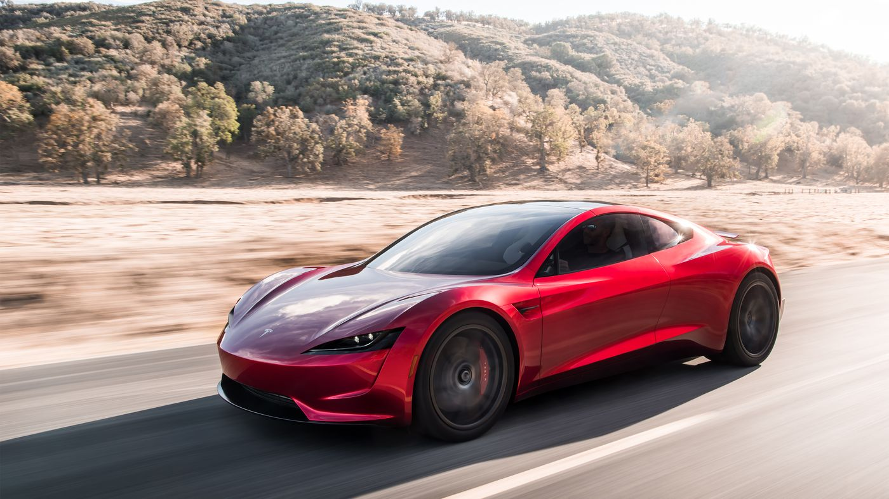
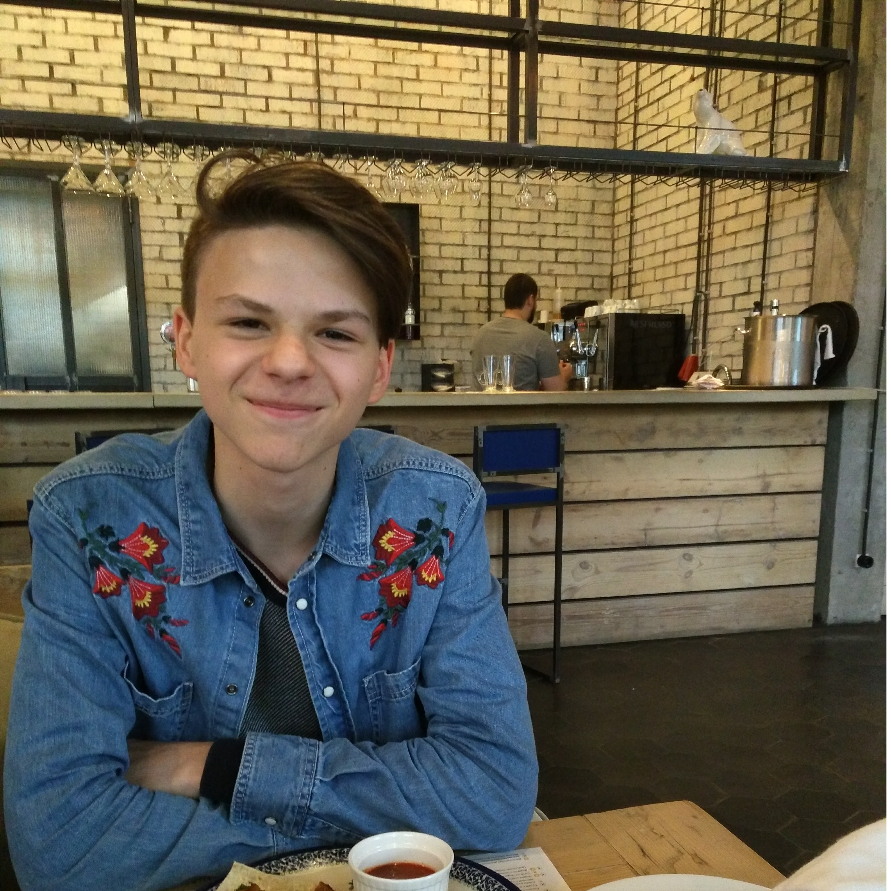

- A robot may not injure a human being or, through inaction, allow a human being to come to harm.
- A robot must obey the orders given it by human beings except where such orders would conflict with the First Law.
- A robot must protect its own existence as long as such protection does not conflict with the First or Second Laws.
Industry
Boston Dynamics
Boston Dynamics is an American engineering and robotics design company that is best known for the development of BigDog, a quadruped robot designed for the U.S. military with funding from Defense Advanced Research Projects Agency (DARPA), and DI-Guy, software for realistic human simulation. Early in the company's history, it worked with the American Systems Corporation under a contract from the Naval Air Warfare Center Training Systems Division (NAWCTSD) to replace naval training videos for aircraft launch operations with interactive 3D computer simulations featuring DI-Guy characters. The company is a pioneer in the field of robotics and it is one of the most advanced in its domain.
Tesla
Tesla, Inc. (formerly Tesla Motors) is an American automaker, energy storage company, and solar panel manufacturer based in Palo Alto, California. Founded in 2003, the company specializes in electric cars, lithium-ion battery energy storage, and residential photovoltaic panels (through the subsidiary company SolarCity). The additional products Tesla sells include the Tesla Powerwall and Powerpack batteries, solar panels and solar roof tiles. CEO Elon Musk said that he envisions Tesla as a technology company and independent automaker, aimed at eventually offering electric cars at prices affordable to the average consumer. The company was named after the Serbian-American electrical engineer and physicist Nikola Tesla by company co-founders Martin Eberhard and Marc Tarpenning.


Ivanov Andrew
ivanov-andrey15@mail.ru